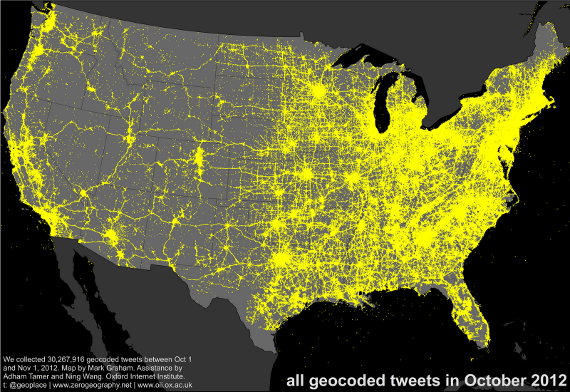
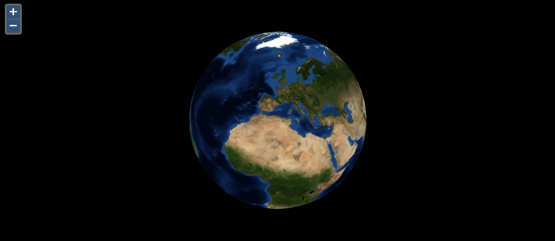

Master class OL3
Éric Lemoine
 eric.lemoine@camptocamp.com
eric.lemoine@camptocamp.com
 @elemoine
@elemoine
 @elemoine
@elemoine
Contenu
- Présentation générale d'OL3 (~45mn)
- Description de l'API et exercices élémentaires (~1h)
- Développement d'une application (~1h)
- (Apprendre à participer et contribuer à OL3)
Présentation générale d'OL3
Commençons par une démo !
Liens

Vision OL3
→ Où veut-on aller avec OL3?
2D et 3D

(Image issue du projet OSM-3D.org)
Vecteur
Des millions?!
Cartes = Graphiques

"Mais d'autres libs sont déja disponibles, non ?"
→ Où se situe OL3 ?
Alors ? Où ?
OpenLayers 2

OL3
→ OL3 doit savoir faire beaucoup de choses !
→ "Un projet ambitieux, pour des cartes ambitieuses"
API,
et exemples
ol.Map / ol.View
var view = new ol.View2D({
center: [0, 0],
zoom: 0
});
var map = new ol.Map({
target: 'map',
layers: [layer],
view: view
});
ol.layer / ol.source
var osm = new ol.layer.TileLayer({
source: new ol.source.OSM()
});
var bing = new ol.layer.TileLayer({
source: new ol.source.BingMaps({
// your key here
key: 'AlQLZ0-5yk301_ESrmN...',
style: 'AerialWithLabels'
})
}));
var mapbox = new ol.layer.TileLayer({
source: new ol.source.TileJSON({
url: '//api.tiles.mapbox.com/v3/mapbox.world-dark.jsonp'
})
});
ol.interaction
ol.interaction.Dragol.interaction.DragRotateol.interaction.KeyboardPanol.interaction.TouchZoom// etc.
ol.control
ol.control.Zoomol.control.ScaleLineol.control.MousePositionol.control.Attribution// etc.
Example interaction et control
Pas de popups!?!
ol.Overlay
var marker = new ol.Overlay({
map: map,
position: buriedTreasure,
element: document.createTextElement('X marks the spot')
});
ol.Overlay
var el = document.getElementById('popup');
var popup = new ol.Overlay({
map: map,
element: el
});
map.on('click', function(evt) {
$(el).popover({
'placement': 'top',
'html': true,
'content': 'Roll your own popup!'
});
$(el).popover('show');
popup.setPosition(evt.getCoordinate());
});
ol.animation
function fly(map, home, duration) {
var view = map.getView().getView2D();
var start = +new Date();
var pan = ol.animation.pan({
duration: duration,
source: view.getCenter(),
start: start
});
var bounce = ol.animation.bounce({
duration: duration,
resolution: 4 * view.getResolution(),
start: start
});
map.addPreRenderFunctions([pan, bounce]);
view.setCenter(home);
}
Vecteur
ol.layer.Vector
var vector = new ol.layer.Vector({
source: new ol.source.Vector({
projection: ol.projection.get('EPSG:4326')
})
});
Vecteur avec Canvas 2D
Code pour l'interaction avec les vecteurs:
map.getFeatureInfo({
pixel: evt.getPixel(),
layers: [countries], // optional
success: function(features) {
$('#info').html('');
for (var i = 0, ii = features.length; i < ii; ++i) {
$('#info').append(features[i].get('name') + '<br>');
}
}
});
Un mot sur la compilation
Hein ? Oui oui.
Closure Compiler
- Variable renaming
- Dead code elimination
- Property flattening
- Prototype method devirtualization
- Inlining
Closure Compiler Example
goog.provide('ANamespace.ASubNamespace.AClass');
ANamespace.ASubNamespace.AClass = function() {
this.aProperty = 'prop1';
};
ANamespace.ASubNamespace.AClass.prototype.aMethod =
function() {
this.aProperty = 'change';
};
var anInstance = new ANamespace.ASubNamespace.AClass();
anInstance.aMethod();
window.b=new function(){this.a="prop1"};window.b.a="change";
État actuel
- Alpha 1 released
- Limité, mais déja utile
- L'API change...
Vers 3.0.0 final
- Plus d'alphas et betas à venir
- Le renderer WebGL pour le vecteur
- Stabilisation des API
Cesium Integration
Contenu (rappel)
- Présentation générale d'OL3 (~45mn)
- Description de l'API et exercices élémentaires (~1h)
- Développement d'une application (~1h)
- (Apprendre à participer et contribuer à OL3)
API, et exercices élémentaires
Logiciels requis
- Éditeur de texte
- Serveur web (Apache)
- Navigateur web (FireFox ou Chrome)
Ou utiliser http://jsfiddle.net.
Ressources
- Doc de l'API : http://ol3js.org/en/master/apidoc/
- Exemples : http://ol3js.org/en/master/examples/
Les objets de base
ol.Mapol.View2Dol.layer.* (ol.layer.TileLayer)ol.control.* (ol.control.Attribution)ol.interaction.* (ol.interaction.DragPan)
Exemple de base
Utilisé comme base pour chaque exercice.
<!DOCTYPE html>
<html>
<head>
<meta charset="utf-8">
<meta name="viewport"
content="initial-scale=1.0, user-scalable=no,
width=device-width">
<title>Exercice élémentaire</title>
<link rel="stylesheet"
href="http://ol3js.org/en/master/build/ol.css">
<style>
#map {
width: 600px;
height: 400px;
}
</style>
</head>
<body>
<div id="map"></div>
<script
src="http://ol3js.org/en/master/build/ol.js"></script>
<script>
var map = new ol.Map({
target: 'map',
view: new ol.View2D({
zoom: 0,
center: [0, 0]
}),
layers: [
new ol.layer.TileLayer({
source: new ol.source.OSM()
})
]
});
</script>
</body>
</html>